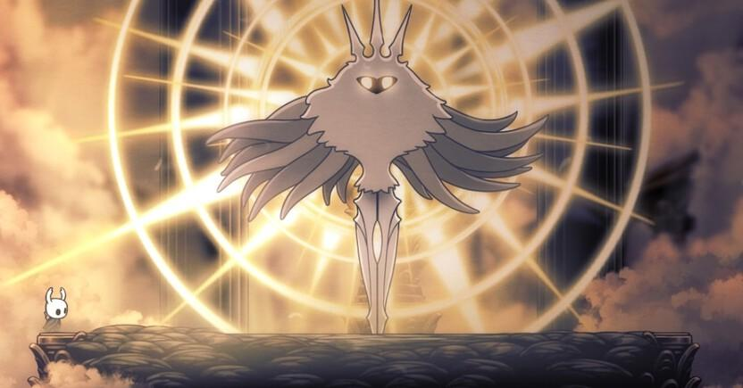

LOS FINALES DE HOLLOW KNIGHT
Hollow Knight cuenta con diferentes finales que muestran distintos desenlaces para la historia de Hallownest. A lo largo de la aventura, el Caballero descubre secretos relacionados con el origen de la infección, el Vacío, los antiguos gobernantes y los recipientes creados para contener a la Radiancia. Dependiendo de los objetos obtenidos, las decisiones tomadas y los desafíos completados, el destino del Caballero y del reino puede cambiar. Cada final ofrece una perspectiva diferente sobre el sacrificio, la libertad y el futuro de Hallownest.
El destino de Hallownest
Los finales de Hollow Knight muestran las diferentes consecuencias de la aventura del Caballero y su enfrentamiento contra las fuerzas que amenazan al reino de Hallownest.

Ambientación musical
Escucha esta melodía misteriosa mientras descubres los diferentes desenlaces de Hollow Knight.
1. El Caballero Hueco
Este es uno de los finales principales y puede conseguirse sin completar todos los secretos de la historia. Para obtenerlo, el jugador debe avanzar hasta el Templo del Huevo Negro y derrotar al Hollow Knight, sin haber conseguido previamente el Corazón del Vacío. Durante el enfrentamiento, el Caballero se enfrenta al recipiente que fue elegido por el Rey Pálido para contener a la Radiancia. Aunque el Hollow Knight fue creado para cumplir esa función, la infección terminó manifestándose nuevamente en su interior. Al derrotarlo, el Caballero ocupa su lugar y queda encerrado dentro del templo. Este desenlace muestra que el problema de Hallownest no ha desaparecido definitivamente, sino que el ciclo de contención vuelve a comenzar. El reino permanece bajo la amenaza de la infección y el protagonista termina realizando un sacrificio parecido al de su antecesor.
2. Hermanos Sellados
Este final requiere conseguir el Corazón del Vacío, un objeto relacionado con el origen del Caballero y con los secretos del Abismo. Después de obtenerlo, el jugador debe regresar al Templo del Huevo Negro y enfrentarse nuevamente al Hollow Knight. Durante la batalla, Hornet aparece para ayudar al protagonista. Ella utiliza sus habilidades para inmovilizar temporalmente al Hollow Knight, permitiendo que el Caballero tenga una oportunidad de terminar el enfrentamiento. Sin embargo, si el jugador continúa atacando al jefe en lugar de utilizar el Aguijón Onírico Despierto, se obtiene este final. Cuando el combate termina, Hornet queda atrapada dentro del templo junto al Caballero. Ambos pasan a formar parte de los sellos que mantienen cerrada la entrada. De esta manera, el reino vuelve a quedar protegido, pero Hornet también pierde su libertad y la amenaza de la infección no se resuelve definitivamente.
3. No Más Sueños
Este desenlace representa uno de los momentos más importantes de la historia. Para conseguirlo, es necesario obtener el Corazón del Vacío y regresar al Templo del Huevo Negro para luchar contra el Hollow Knight. Durante el combate, Hornet interviene y consigue inmovilizar al enemigo. En ese momento, el jugador debe utilizar el Aguijón Onírico Despierto sobre el Hollow Knight para entrar en su mente y acceder al enfrentamiento contra la Radiancia, la entidad relacionada con el origen de la infección. Dentro del mundo de los sueños, el Caballero debe enfrentarse a la Radiancia mientras el Vacío comienza a manifestarse. Con su ayuda, consigue derrotarla y poner fin a la amenaza que había afectado durante tanto tiempo a los habitantes de Hallownest. Al finalizar la batalla, la Radiancia desaparece y el Vacío termina consumiendo el enfrentamiento. Este final representa la ruptura del ciclo que mantenía al reino bajo la influencia de la infección.
4. Abraza el Vacío
Este final pertenece al contenido adicional Buscador de Dioses y requiere superar uno de los desafíos más difíciles del juego. Para conseguirlo, el jugador debe completar los primeros cuatro panteones y después enfrentarse al Panteón de Hallownest, una prueba que reúne numerosos jefes de diferentes regiones. Durante este desafío, el Caballero debe demostrar que domina sus habilidades y que puede superar enfrentamientos consecutivos contra enemigos cada vez más poderosos. Al llegar al final del panteón, aparece el Absoluto Destello, una versión mucho más poderosa de la Radiancia. Después de derrotarlo, el Vacío se libera y se manifiesta con una fuerza enorme. En la escena final, su poder alcanza el mundo exterior y Hornet aparece junto a la entrada del templo. El desenlace deja abierta la situación de Hallownest y muestra las consecuencias de la liberación del Vacío.
5. Flor Delicada
Este final es una variante de Abraza el Vacío y también pertenece al contenido Buscador de Dioses. Para conseguirlo, el jugador debe completar la misión de la Flor Delicada, una tarea relacionada con la Dama Gris. Esta misión consiste en transportar una flor especial hasta la tumba de la Dama Blanca sin que resulte dañada durante el recorrido. Después de completar la misión, es necesario llevar otra Flor Delicada hasta el Buscador de Dioses, que se encuentra en Godhome. Una vez entregada, el jugador debe superar el Panteón de Hallownest y derrotar al Absoluto Destello. El desenlace es parecido al de Abraza el Vacío, pero la presencia de la flor provoca una diferencia importante. Cuando el Vacío se manifiesta, la Flor Delicada también interviene en los acontecimientos y aparece una escena distinta. Este final muestra cómo un objeto aparentemente sencillo puede cambiar el resultado de uno de los desafíos más importantes del juego.
6. Fin de una Era
A diferencia de los demás, este desenlace es una escena adicional relacionada con el Señor Seta, un personaje misterioso que aparece en diferentes regiones de Hallownest. Para desbloquearla, el jugador debe encontrarlo y hablar con él en sus distintas ubicaciones a lo largo del reino. Después de completar su recorrido, el Señor Seta puede aparecer en la escena posterior a cualquiera de los finales principales. En ella se muestra cómo se prepara para abandonar Hallownest y continuar su viaje hacia otro lugar. Aunque no cambia directamente el destino del Caballero ni resuelve el conflicto de la infección, esta escena ofrece un cierre adicional para uno de los personajes secundarios del juego. También refuerza la idea de que el mundo de Hallownest continúa teniendo historias y misterios más allá de la aventura principal.
7. La importancia de los finales
Los diferentes finales de Hollow Knight permiten comprender mejor la historia y los secretos de Hallownest. Cada desenlace presenta una consecuencia distinta de las acciones del Caballero y revela más información sobre personajes como Hornet, el Hollow Knight, la Radiancia y el Vacío. Además, algunos finales requieren explorar lugares ocultos, completar misiones secundarias y superar desafíos especiales. Esto hace que descubrir todos los desenlaces sea una parte importante de la experiencia, ya que permite conocer diferentes aspectos del universo creado por Team Cherry y comprender mejor el destino de sus personajes.